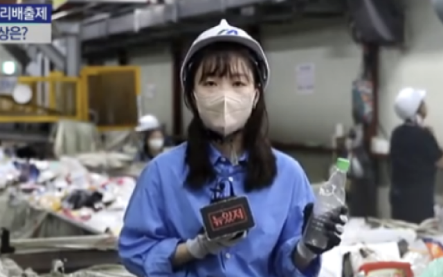
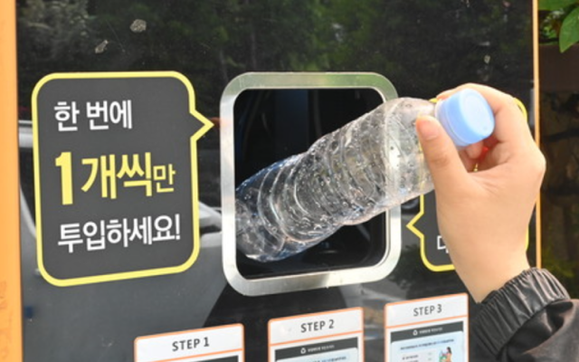
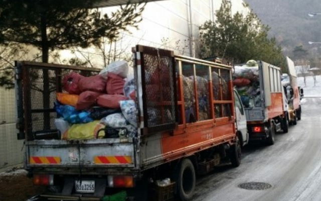
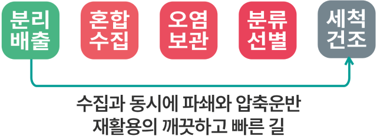
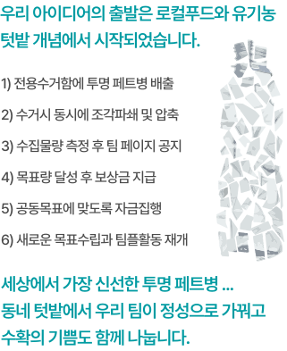
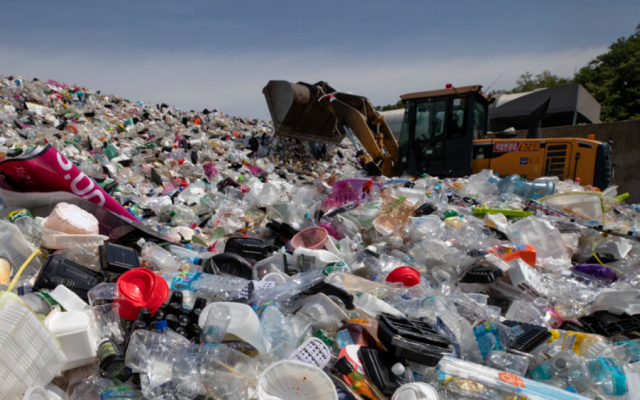
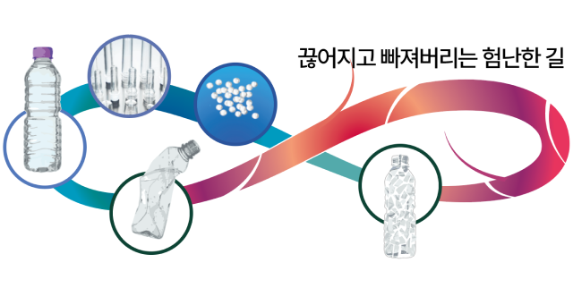
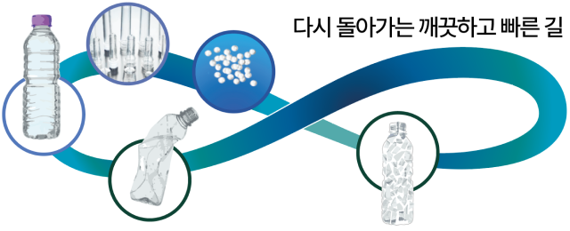

단일품목으로 가장 많은 제품에 적용되는 투명 페트는 고급재료로서 물리적 방법으로도 재활용 효과가 크기 때문에 엄격한 배출 기준으로 관리하고 있습니다.
그러나 현실은 어떤가요?
수집 운반과정에서 이미 서로 다른 재활용품과 함께 뒤섞여 버리고 나름 손질하고 정리해서 내보낸 투명 페트병은 보관과 운반과정을 반복하면서 오염만 가중됩니다.
애써 분리 배출하지만 결국은 대규모 선별장에서 다시 선별작업을 해야만 한다고 합니다.

애써 따로 버린 투명 페트병
애써 따로 버린 투명 페트병
재활용의 실상은?
22년 06월 17일, YTN 애써 따로 버린 ‘투명페트병'... 재활용 실상은?
결국 혼합된 재활용 배출 물품을 다시 선별하고 오염상태를 제거하기 위하여 에너지와 인건비가 투입되고 과정에서 환경오염도 가중됩니다.
이로 인하여 재생 페트는 신품 재료보다도 더 비싸게 될 수 밖에 없습니다.
재활용업의 새로운 시도

AI 기술과 보상시스템 접목한
AI 기술과 보상시스템 접목한
무인회수기 등장
24년 11월 21일, 전북대신문 투명페트병 무인회수기 이용율 낮은 이유는
1회에 30개 기준 15분 이상의 투입시간이 소요되고 수거함 용량이 부족하여 일부 기계가 오작동되는 불편함에도 불구하고 환경문제를 해결할 수 있다고 생각하는 시민들의 참여가 늘어났습니다.
그러나 서비스의 본질과는 다르게 일부의 이용자들이 편법으로 보상받거나 시설 사용을 독점하면서 선의의 참여자를 돌아서게 만들기도 합니다.
그러나 서비스의 본질과는 다르게 일부의 이용자들이 편법으로 보상받거나 시설 사용을 독점하면서 선의의 참여자를 돌아서게 만들기도 합니다.
근본적인 해결 방안은?

혼합수집과 오염보관
혼합수집과 오염보관
첫 단추가 중요하다
페트병 1개 당 지급하는 10원의 보상금이 아니라 환경문제를 해결해보려는 시민들의 노력으로 여기까지 왔습니다.
시민들의 분리배출의 수고를 물거품으로 만들어버리는 수집과 운반 과정의 근본적인 개선없이 성공은 불가능합니다.
재활용사업의 첫 단추부터
바로 꿰어갑니다
바로 꿰어갑니다


E p i l o g u e

나 어떡해,
나 어떡해,
다시 돌아가고 싶어
2020년 경기도 자원순환센터에 쌓여있는 폐플라스틱 저작권 시사 IN 조남진

편리하면서 위험한 발명품
페트병이 다시 페트병으로 돌아가는 것이야말로 닫힌 순환고리로서 진정한 가치가 있습니다.
그러나 현재는 가치사슬이 끊어지고 소중한 자원이 중도에 폐기되면서 도리어 생태계를 위협합니다.
편리하면서도 위험한 플라스틱의 자원순환 여정을 바로 잡겠습니다.

페트병은 다시 페트병으로
Bottle to Bottle
소비 후 배출되는 투명 페트병을 가장 깨끗하고 빠르게 고품질 재생페트로 자원화하는 바른 길을 새롭게 열어가겠습니다.
배출 현장에서 수거와 동시에 작은 조각으로 파쇄하여 오염없이 압축하여 운반됩니다. 세상에서 가장 신선하고 건강한 페트병 재활용은 팀플에서 시작됩니다.